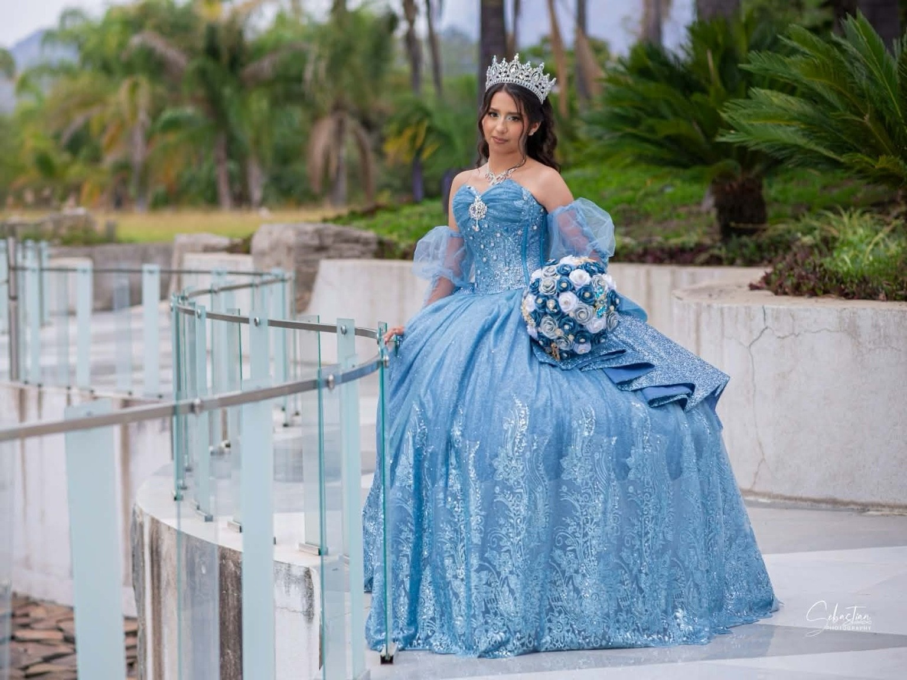

Ceremonia religiosa
1:00 p. m.
Templo de San Francisco
Zona Centro, Pénjamo, Gto.
Cómo llegarSábado 26 de diciembre de 2026
TOCA EL LACRE PARA ABRIR
UNA FECHA PARA RECORDAR
Mis XV años
Hay sueños que se vuelven más hermosos
cuando los compartimos.

Naiara Elizabeth · Mis XV años
DE CORAZÓN
Con el corazón lleno de ilusión, quiero compartir contigo la alegría de celebrar mis quince años. Tu presencia hará este día todavía más especial.
CON EL AMOR DE MIS PADRES
Luis Gerardo Frías Roa
y
Isabel Anany Zavala Ortiz
Y ACOMPAÑADA POR MIS PADRINOS DE VELACIÓN
Francisco Elizarraras
y
Irene Zavala Mendoza
RESERVA ESTA FECHA
SÁBADO
26DICIEMBRE2026Faltan para comenzar la ceremonia
ACOMPÁÑAME EN ESTE GRAN DÍA
1:00 p. m.
Templo de San Francisco
Zona Centro, Pénjamo, Gto.
Cómo llegar3:00 p. m.
Salón Morelos
Calle Morelos núm. 2
Antigua Casa de Cultura, Pénjamo, Gto.
PARA LA OCASIÓN
Elegante
El color azul está reservado exclusivamente para la quinceañera.
UN DETALLE DE CARIÑO
Lluvia de sobres
Tu presencia es el mejor regalo. Todos los obsequios son bien recibidos y habrá una cajita especial para quienes deseen participar en la lluvia de sobres.
CON GRATITUD
“Todo cuento de hadas tiene personas especiales que ayudan a convertir los sueños en realidad”.
Con mucho cariño agradecemos a quien ha hecho posible que Naiara lleve el vestido de sus sueños.
PADRINO DE VESTIDONOS ENCANTARÁ VERTE
Confirma directamente con la familia. Tu mensaje se enviará al WhatsApp de la mamá de Naiara.
Al tocar el botón se abrirá WhatsApp. Revisa tu mensaje y pulsa «Enviar» para completar la confirmación.